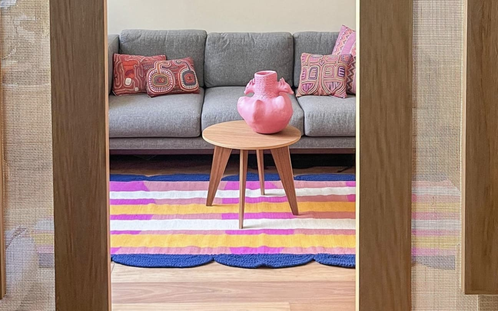
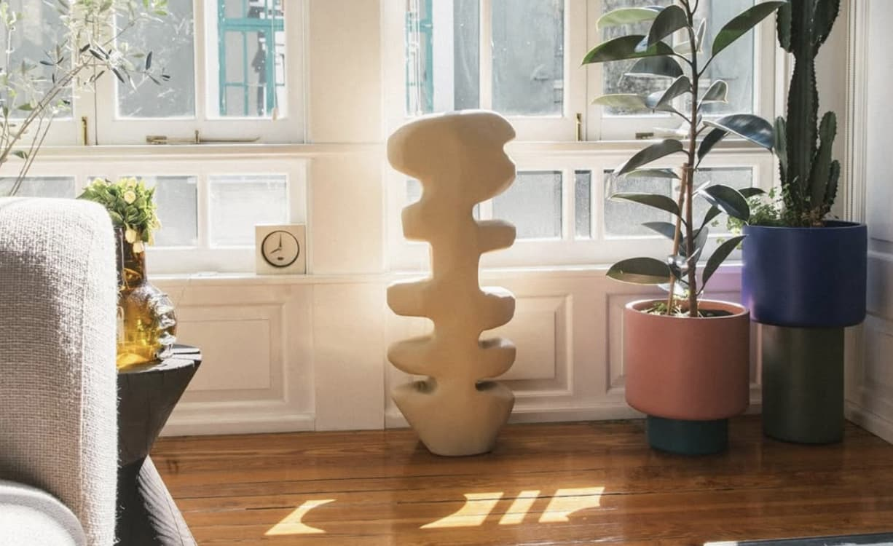
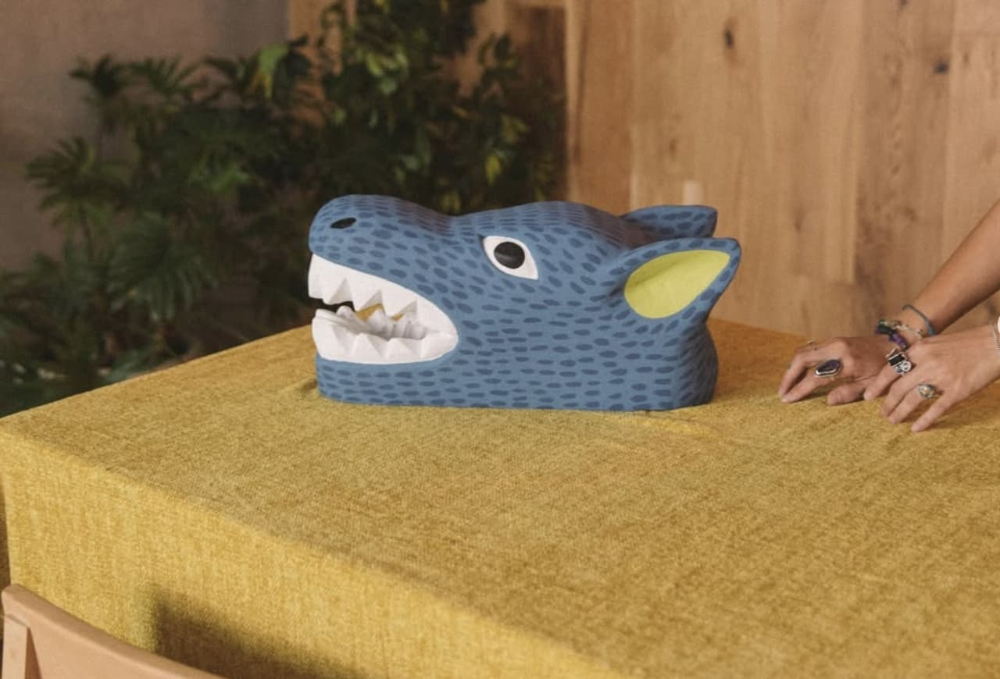

M.A studio

M.A. Estudio centra su práctica en el diseño de mobiliario y objetos desde una perspectiva funcional y depurada. Su lenguaje se basa en la exploración de la geometría, los materiales y los procesos constructivos. A través de una estética minimalista, el estudio desarrolla piezas donde cada elemento responde a una intención clara, destacando por su precisión y equilibrio formal.
Diseños

Tapete Bentag, Ciudad de México, 2025

Flor de desierto, Ciudad de México, 2026

Mascara "lobo", Ciudad de México, 2026